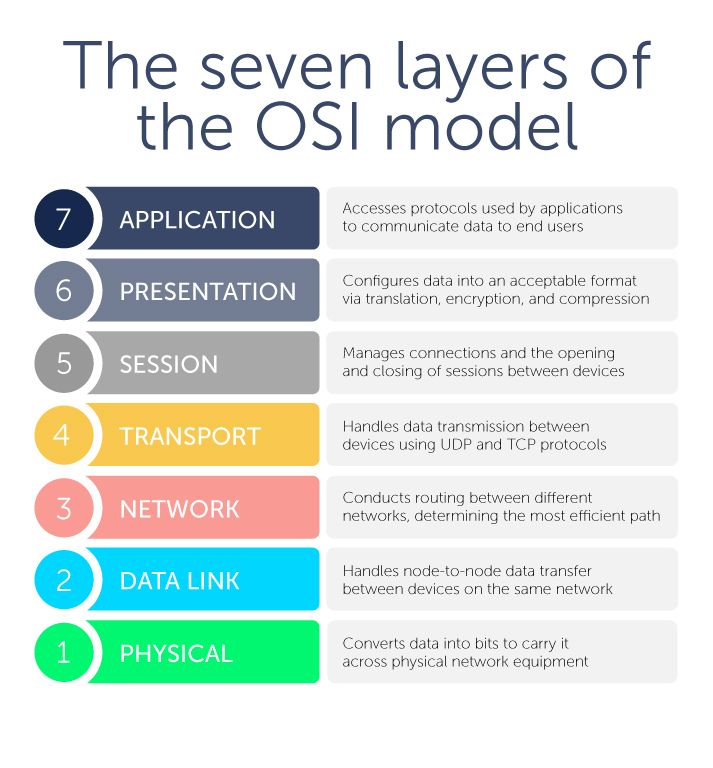

Css testit
WikipediaOSI (Open Systems Interconnection) -malli on käsitteellinen viitekehys, jota käytetään ymmärtämään verkkoviestintää seitsemän kerroksen kautta. Malli auttaa standardoimaan verkkoprotokollia ja vuorovaikutuksia eri tietokoneiden ja laitteiden välillä. Kukin kerros suorittaa tiettyjä toimintoja ja kommunikoi suoraan sen ylä- ja alapuolella olevien kerrosten kanssa. OSI-malli on tärkeä työkalu verkkoammattilaisille vianetsinnässä, suunnittelussa ja verkonratkaisujen toteutuksessa.
OSI-verkkomalli
OSI-malli koostuu seitsemästä kerroksesta, joista kukin on suunniteltu suorittamaan tiettyjä tehtäviä, jotka ovat olennaisia verkkoviestinnälle:
1. Fyysinen kerros: Tämä on OSI-mallin alin kerros. Se käsittelee raakadataa ja sen siirtoa fyysisen välineen, kuten kaapeleiden, kytkinten ja verkkokorttien, kautta. Se määrittelee verkon fyysiset aspektit, kuten jännitteen, kaapelikoot ja siirtonopeudet.
2. Datayhteyskerros: Datayhteyskerros varmistaa virheettömän tiedonsiirron laitteiden välillä samalla verkolla. Se pakkaa raakabittejä fyysisestä kerroksesta kehyksiksi ja käsittelee näiden kehyksien osoittamista. Esimerkkejä teknologioista, jotka kuuluvat tähän kerrokseen, ovat Ethernet ja Wi-Fi.
3. Verkkokerros: Tämä kerros on vastuussa datan paketoinnista ja reitittämisestä laitteiden välillä eri verkoissa. Se varmistaa, että data voi kulkea lähteestä määränpäähän välilaitteiden, kuten reitittimien, kautta. Esimerkki protokollasta tässä kerroksessa on IP (Internet Protocol).
4. Kuljetuskerros: Kuljetuskerros takaa luotettavan tiedonsiirron laitteiden välillä. Se huolehtii virheenkorjauksesta, virtausohjauksesta ja kadonneiden tietojen uudelleenlähetyksestä. Yleisimpiä protokollia tässä kerroksessa ovat TCP (Transmission Control Protocol) ja UDP (User Datagram Protocol).
5. Istuntokerros: Tämä kerros hallinnoi ja kontrolloi vuorovaikutusta kahden laitteen välillä. Se luo, ylläpitää ja lopettaa istuntoja laitteiden välillä, varmistaen, että data on oikein synkronoitu viestinnän aikana.
6. Esityskerros: Esityskerros on vastuussa datan muuntamisesta vastaanottavan laitteen ymmärtämään muotoon. Se käsittelee salausta, tiedonpakkausta ja tiedon muotoilua (esimerkiksi erilaisten merkistöjen välillä tapahtuvaa käännöstä).
7. Sovelluskerros: Tämä on OSI-mallin ylimmäinen kerros, jossa loppukäyttäjän sovellukset ja verkkopalvelut toimivat. Se tarjoaa verkkopalveluja suoraan käyttäjän sovellukselle, kuten sähköpostille, tiedostonsiirrolle ja verkkoselaamiselle. Yleisimpiä protokollia ovat HTTP, FTP ja SMTP.